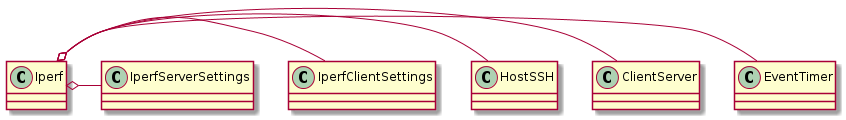
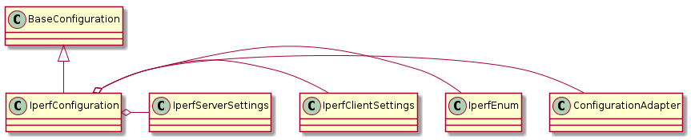

A set of convenience classes and methods for running iperf traffic.
This is a namedtuple to pass around the client and server for different directions.
ClientServer = namedtuple('ClientServer', 'client server'.split())

Iperf(dut, traffic_server, client_settings, ...) |
A runner of iperf tests |
Iperf.event_timer |
An event-timer instance to help the server block the client |
Iperf.client_server |
A dict with {direction:ClientServer} named tuples |
Iperf.udp |
A check for the UDP flag in the settings |
Iperf.__call__(direction, filename) |
the main interface |
Iperf.downstream(filename) |
This is slightly safer than using the call, since you don’t need to know the direction string |
Iperf.upstream(filename) |
Like downstream this is just a convenience pass-through to __call__ |
Iperf.run(host, settings, filename[, ...]) |
Runs one-direction of traffic |
Iperf.start_server(server, filename) |
Starts the server in a thread so the client can run. |
Iperf.run_client(client, filename) |
Runs the client iperf session |
Iperf.version(connection) |
Runs iperf with the version flag |
Iperf.parser |
A holder of constants.
A configuration for iperf testing.

IperfConfiguration(*args, **kwargs) |
A holder of iperf parameters | ||
IperfConfiguration.direction |
Gets the traffic direction (only uses the first letters (u, d, or b)) | ||
IperfConfiguration.client_settings |
An IperfClientSettings object | ||
IperfConfiguration.server_settings |
IperfServerSettings | ||
IperfConfiguration.get_section_dict() |
Convenience method to get the section dict | ||
IperfConfiguration.reset() |
Sets the properties to None | ||
IperfConfiguration.check_rep() |
Checks the representation | ||
IperfConfiguration.example |
|
||
IperfConfiguration.section |
The section name in the configuration |